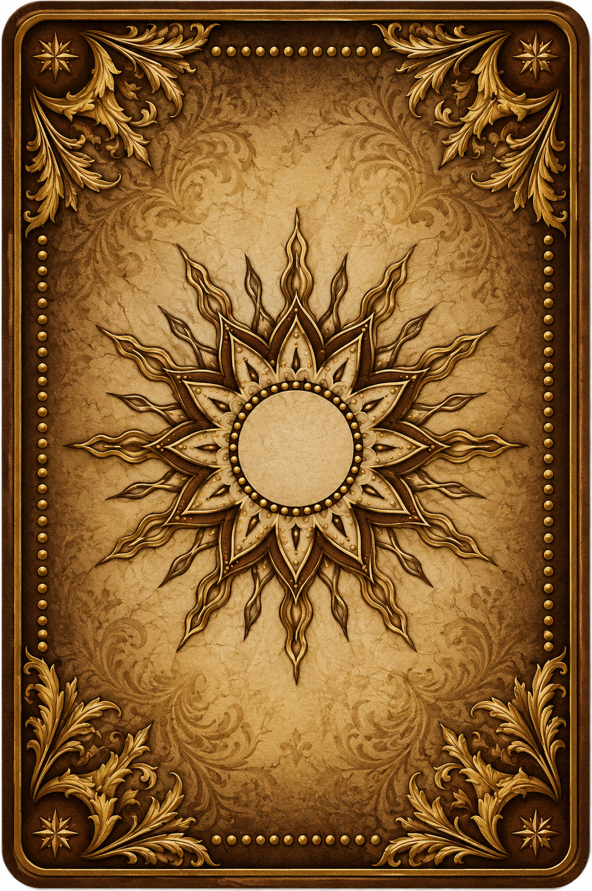

Quatro de Copas no Centro com um Quatro de Espadas na Primeira Casa, esse Quatro de Espadas tem uma Rainha de Copas na negativa e um Sete de Ouros na positiva, além disso, temos a Rainha de Paus e a Rainha de Espadas. Com Quatro de Espadas e Louco: começar o ano questionando para onde ir, sentir que as coisas estão meio paradas, sem saber pra onde ir, tentar coisas e não avanço. Formalizar união matrimonial.
Querer fazer algo que gosta mas ficar no campo das ideias devido a um bloqueio emocional. Isso traz um contexto de relação com a mãe (rainhas): insegurança emocional, apesar de ser uma Rainha de Paus, forte e valente com assuntos externos (louco), mas quando o assunto sou eu mesma (2 de espadas) minha atitude é diferente, mesmo que a relação com a mãe não seja ruim, é uma mãe muito forte, a história familiar foi difícil e ecoa dentro de mim, mesmo que sejam coisas que aconteceram em uma infância muito precoce, na hora que eu vou me sentir confiante, poderosa: rola um medo.
O assunto ancestralidade também aparece na árvore deste arcano: a estabilidade emocional ligada àqueles que vieram antes de mim, pai e mãe.
Centro | Quatro de Copas
É uma mandala de Água, para que o ano vá pra frente, é preciso resolver as coisas que ficaram pra trás. Preciso aceitar as bênçãos e as oportunidades da vida. Sentimento de que não mereço, não me sinto capaz ou não me sinto pronta e isso gera autossabotagem (história da mãe, das avós, das mulheres da família). Olhar muito para o passado, a ponto de não conseguir perceber o que o futuro pode trazer. Não medir o futuro pela régua do passado.
Jan | Casa 1 | Quatro de Espadas
Na negativa: não conseguir movimentar questões que dependem de dinheiro, não está usando a parte do mental que conenecta com os mortos. Procurar o paradeiro do túmulo da minha irmã caçula, não deixar esquecido.
Fev | Casa 2 | Sete de Ouros
Com Dois de Espadas na positiva: se eu tiver uma renda para garantir o básico, eu já começo a organizar o que está pendente e deixo as coisas futuras com uma perspectiva de organização e planejamento melhor, também fala sobre manter duas fontes de renda sempre, mesmo quando a primeira fonte for maravilhosa. O jogo fala que, com duas fontes de renda, eu enriqueço mais rápido. Período favorecido para oportunidades de trabalho.
Mar | Casa 3 | Dois de Espadas
Com Sete de Ouros e Louco: tensão na hora de se comunicar, timidez, isso faz com que as pessoas não consigam traduzir a minha competência. Sendo que, o que eu sei fazer é nível Carruagem com Rainha de Espadas, eu sou CDF, sou boa no que faço. O problema é o medo e a cobrança que vem da infância. O resultado é ficar travada na hora das entrevistas, espero o pior das pessoas, crueldade, exploração. Essa sensação está transparecendo nas minhas entrevistas.
Ganhar dinheiro conversando com pessoas sobre assuntos ligados à Lua: intuição, conexão. Ao lado de um Sete de Ouros: todo número sete aponta para questões espirituais, sobre ganhar dinheiro com assuntos esotéricos, constelação, thetahealing, com a força da palavra, do conhecimento, da mente e isso traz bençãos.
Abr | Casa 4 | Louco
Preciso relaxar, respiração, meditação, gritar, buscar leveza. A chave da comunicação é o Louco: quando der uma relaxada, vai fluir muito bem. Com Dois de Espadas e Rainha de Paus: insegurança, sou arquivista de mim mesma, como assim não estou lidando com essa emoção, sentir que está perdendo o controle. Mas o Tarot me vê como uma rainha, como uma mulher poderosa, que toma a frente das coisas. Ter mais mansidão na hora de me ver no espelho. A dureza que eu tenho comigo mesma está aparecendo nas entrevistas (estou projetando?). Esta casa corresponde aos ancestrais e família.
Mai | Casa 5 | Rainha de Paus
Tenho talento para trabalhar com a parte energética: reiki, pêndulo, terapias holísticas. Na negativa: o espiritual não sendo usado. Com Carruagem pode falar sobre problemas hereditários ligados á pressão ou ao coração.
Jun | Casa 6 | Carruagem
Também traz a ideia de duas fontes de renda nas duas esfinges: dois caminhos. Esta Casa trata de assuntos ligados à rotina. Período favorecido para oportunidades de trabalho. Atenção com sedentarismo ou com ficar sentada por longos períodos, possibilidade de ter a região do quadril mais sensível, estar propenso a inchaço nas pernas.
Jul | Casa 7 | Rainha de Espadas
Também traz a ideia de duas fontes de renda porque é simbolizada pelo Signo de Libra. É a positiva da Casa 6 | Carruagem.
Ago | Casa 8 | Pajem de Paus
Na positiva: Exu Marabô. Na negativa: Pessoas encrenqueiras em terreiro.
Set | Casa 9 | Diabo
Com Rainha de Paus e Seis de Ouros: Um trabalho que foi muito negativo pra mim, existe um trauma, uma dor muito grande relacionada ao assunto carreira e trabalho. Embora isso esteja me segurando, não devo focar nesse ponto, o futuro pode ser uma experiência completamente diferente e nova, não haverá um trabalho 100% perfeito mas haverá um trabalho melhor.
Entidade abrindo meus caminhos: Tranca Rua das Almas, possibilidade de assentamento. Pedir pra Exu ajudar a encontrar um bom caminho no assunto terreiro, uma pessoa que realmente ajude a gente, eu e marido, conhecer um lugar sem entrar pra corrente. Na negativa: o espiritual não sendo usado. A coisa já está no nível da cobrança, já está passando da hora. Pessoas em terreiro disputando poder.
Com Seis de Ouros: Competição por dinheiro (Fernando, família).
Out | Casa 10 | Seis de Ouros
Ser mais pragmática: trabalhar, receber o salário e resolver meus problemas financeiros. Ficar sem trabalho me gera dependência das pessoas e eu me cobro muito por isso. Não posso dizer coisas negativas ao mesmo respeito, me ofender, me xingar, me amaldiçãoar ou me rebaixar porque isso traz negatividade para o meu caminho.
Fazer coisas Seis de Ouros: bater ponto, é um trabalho que é só pra pegar o salário mesmo e garantir que o básico não vai faltar. Grandes chances de encontrar uma boa oportunidade de trabalho ainda em 2026. Casa ligada aos assuntos de Carreira.
Nov | Casa 11 | Dois de Paus
Com Dois de Paus: neste ano, vale a pena dois trabalhos, um primeiro para ter um fluxo financeiro e não ficar com a cabeça parada. Menos de realização e mais de cumprir tabela, cumprir tabela. No último trimestre do ano, continuar com duas fontes de renda. Minha dupla formação acadêmica.
Dez | Casa 12 | Rainha de Copas
Presença espiritual, é de outro mundo (Dois de Paus). Dores marcantes na minha mãe devido à perda.
Questões com documentos, jurídicas, questões familiares que envolvem documentos. Pedir para que as entidades familiares guiem e pedir pela família também na resolução de problemas com papelada. Problemas financeiros que vem de ancestralidade: cuidar de ancestralidade resolve dinheiro e saúde. Existem um passado familiar de competição por dinheiro. Uma mulher de papel alto na carreira dele, chefa ou professora, que traz direcionamento sobre o que fazer. Talvez precise primeiro ajudar essa mulher. Investir em educação formal para crescer financeiramente. Atenção com questões de saúde que vem da mãe. Cuidar da relação afetiva com a mãe para diminuir a negatividade na área da saúde. Exu trazendo um grande negócio, só não pode fazer nada sem estar tudo por escrito, assinado e dentro da lei porque tem uma parte negativa na ancestralidade que tenta segurar tudo que envolve documento e dinheiro. Tem caminhos para ganhar muito dinheiro com empreendimento próprio. Pedir a Exu que lhe traga clientes. Formalizar união matrimonial porque é algo que ajuda a prosperar. A família já perdeu muitas coisas porque não estava com a documentação formalizada.
Cartomante: Wayner Lyra Ifamodupé.
Data: 18 de Novembro de 2025.